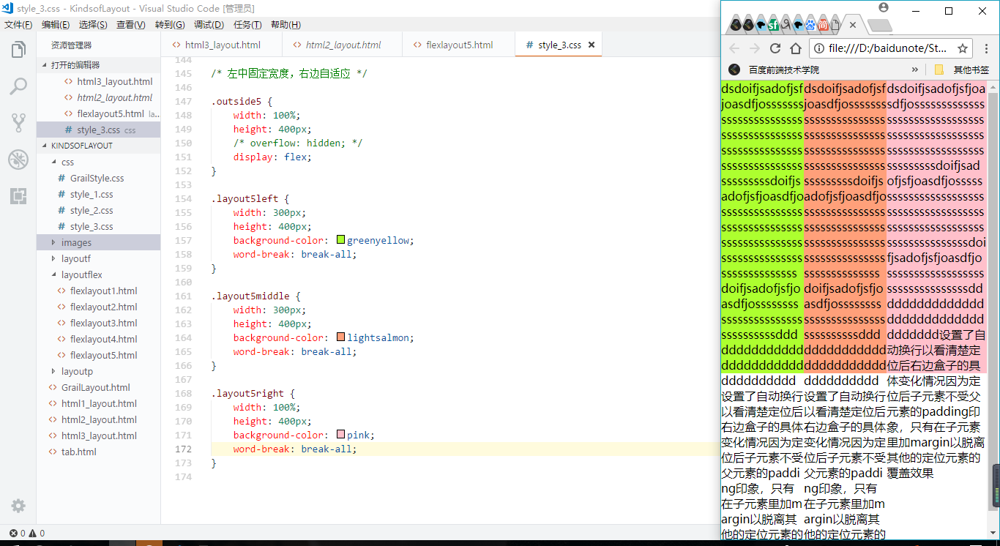

三栏布局 左右固定 中间自适应

对比浮动和定位，弹性盒子则非常非常简单了，虽然固定宽度也会被挤压，但是完美解决了中间和盒子的占位问题，同样，也不会因为挤压而将内容覆盖遮蔽！！！
点击跳转浮动布局实现要求
点击跳转定位实现要求
两栏布局左30%右70%
只用在父级添加一句display：flex就可以了是不是很方便！
两栏布局 右边固定 左边自适应
实现这个就更加容易了，与上面的布局左右属性交换，或者给父级加入flex-direction:raw-reserve;即可使行顺序对调！
三栏布局 左中固定 右自适应
左中两个盒子不会受到挤压！